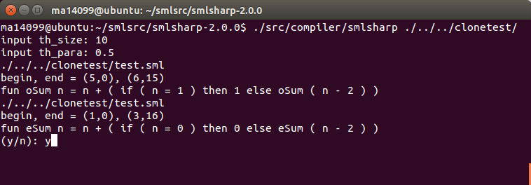

Standard MLを対象としたコードクローン検出ツール
このページでは、PPL2016で発表した論文 「関数適用によるギャップを考慮したコードクローンの検出および除去に関する研究」 で提示した方式で実装したコードクローン検出および除去システムの ソースコードを公開しています。
使い方
codeclone.tar.gz
をダウンロードして展開し、READMEファイルに従ってコンパイル、実行してください。
スクリーンショット

Back to the top page